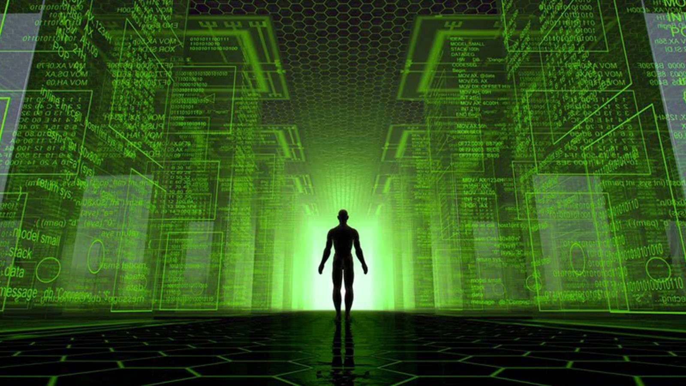

Rodzaje symulacji komputerowych
Przewidywalność zdarzeń
Stochastyczne – korzystają z generatora liczb pseudolosowych lub (bardzo rzadko) losowych (szczególnie popularna jest metoda Monte Carlo).
Deterministyczne – wynik jest powtarzalny i zależy tylko od danych wejściowych i ewentualnych interakcji ze światem zewnętrznym.
Sposób upływu czasu
Z czasem ciągłym – czas zwiększa się stałymi przyrostami, jak w symulacji z czasem dyskretnym, lecz wartości próbek sygnałów są interpolowane dla chwil pośrednich pomiędzy momentami odczytu.
Z czasem dyskretnym – czas zwiększa się stałymi przyrostami, a krok czasowy dobiera się optymalnie ze względu na zasobożerność systemu, jego wydajność i charakter symulowanego obiektu i/lub zjawiska (mikrosekundy w obwodach elektrycznych i miliony lat przy symulacji ewolucji gwiazd).
Symulacja zdarzeń dyskretnych – czas zwiększa się skokowo, ale jego przyrosty są zmienne (ważniejsza jest tu sekwencja zdarzeń niż rzeczywisty lub wirtualny upływ czasu).

Forma danych wyjściowych
Statyczne – wynikiem jest zbiór danych, statyczny obraz itp.
Dynamiczne – wynikiem jest proces przebiegający w czasie np. animacja.
Interaktywne – reagują na sygnały ze świata zewnętrznego np. operatora.
Nieinteraktywne
Liczba użytych komputerów
Lokalne – przetwarzanie odbywa się na pojedynczym komputerze.
Rozproszone – przetwarzanie odbywa się w wielu komputerach połączonych w sieci lokalnej (LAN) lub zewnętrznej np. Internet.
Liczba zmiennych niezależnych
O parametrach skupionych
O parametrach rozłożonych